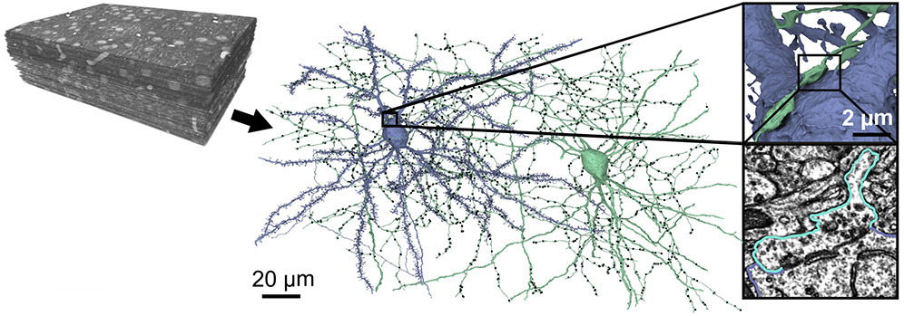
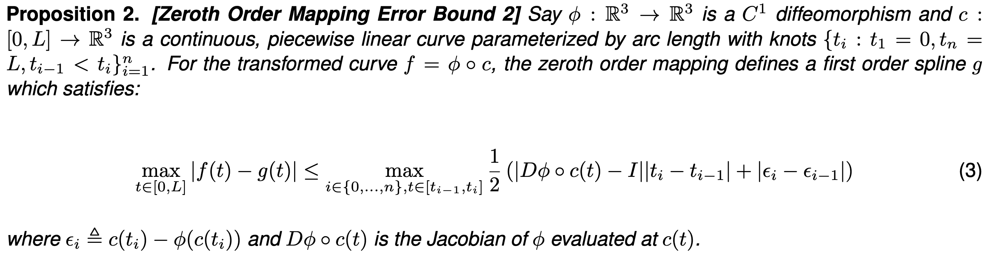
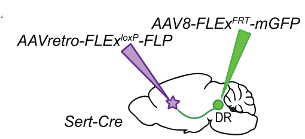

### Extracting Mesoscale Neuron Anatomy from Whole-Brain Images Thomas L. Athey Lab Meeting July 17, 2023 <br> <img src="../../images/funding/jhu_bme_blue.jpg" STYLE="width:100%;" /> <!-- <img src="../images/funding/KNDI.png" STYLE="HEIGHT:95px;"/> --> --- ### Mesoscale Neuron Anatomy <div class="row"> <div class="column8-10">  </div> <div class="column2-10"> <footer, style="font-size: 12px"> Sporns et al., 2005 <br> Mori et al., 2016 <br> Turner et al., 2022 <br> Oh et al., 2014 </footer> </div> </div> --- ### Mesoscale Neuron Anatomy <div class="row"> <div class="column2"> <img src="images/meso-connect.png" STYLE="width:80%;" /> </div> <div class="column2"> </div> </div> <footer, style="font-size: 12px"> Peng et al., 2021; Mitra, 2014 </footer> --- ### The Engineering Problem - A cell-level atlas of the mammalian brain could revolutionize how we understand brain function and brain disorders. - Computational Steps Required: 1. Neuron segmentation and tracing 2. Mapping neurons to common coordinate systems 3. Morphological analysis --- ## .center[Single Neurons] ### .center[Tracing] <br><br><br><br><br><br><br><br><br><br><br><br> <footer, style="font-size: 12px"> Athey et al. (2022) Hidden Markov modeling for maximum probability neuron reconstruction. <i>Commun Biol</i>. </footer> --- <footer, style="font-size: 12px"> Winnubst et al. (2019) </footer> --- ### Fragment-Based Tracing <footer, style="font-size: 12px"> Geman and Jedynak (1996), Longair et al. (2011), Xiao and Peng (2013), Radojevic and Meijering (2017), Xiao and Peng (2013), Athey et al. (2022) </footer> --- ### ViterBrain Overview <img src="images/fig2_algorithm.jpg" STYLE="width:100%;" class="center"/> <footer, style="font-size: 12px"> Athey et al. (2022) </footer> --- ### ViterBrain Tracing <img src="images/viterbrain-examples.jpg" STYLE="width:100%;" /> <footer, style="font-size: 12px"> Athey et al. (2022) </footer> --- ### ViterBrain Performance <footer, style="font-size: 12px"> Athey et al. (2022) </footer> --- ### Assisted Tracing Environment <video width="100%" height="70%" controls> <source src="videos/tracing.mov"> </video> <footer, style="font-size: 12px"> Ongoing collaboration with Sriram Sudarsanam of Kolodkin Lab. </footer> --- ### ViterBrain on Whole-Brain Images <footer, style="font-size: 12px"> Ongoing collaboration with Sriram Sudarsanam of Kolodkin Lab. </footer> --- ## .center[Single Neurons] ### .center[Mapping] <img src="images/mapping/mapping.png" STYLE="width:100%;" class="center"/> <footer, style="font-size: 12px"> Athey et al. (2023) Preserving Derivative Information while Transforming Neuronal Curves. <i>In Review</i>. </footer> --- ### Mapping Discretized Neuronal Curves with Diffeomorphisms <div class="row"> <div class="column2"> Existing Method: <br> $c:\mathbb{R}\rightarrow \mathbb{R}^3$ sampled at $\lbrace t_i \rbrace_i$ $$\phi \cdot \lbrace (t_i, c(t_i)) \rbrace_i=$$ $$\lbrace (t_i, \phi \circ c(t_i)) \rbrace_i$$ </div> <div class="column2"> <img src="images/comp2.jpg" STYLE="width:100%;"/> </div> </div> <footer, style="font-size: 12px"> Fedorov (2013), Qu et al. (2022) </footer> --- ### Generalized Method $$\phi \cdot \lbrace (t_i, c(t_i),...,c^{(k)}(t_i)) \rbrace_i=\lbrace (t_i, \phi \circ c(t_i),...,\frac{d^k}{dt^k}\phi \circ c(t_i)) \rbrace_i$$ <img src="images/map-toy.jpg" STYLE="width:60%;" class="center"/> <footer, style="font-size: 12px"> Athey et al. (2023) Preserving Derivative Information while Transforming Neuronal Curves. <i>In Review</i>. </footer> --- ### Error Bounds  <footer, style="font-size: 12px"> Athey et al. (2023) Preserving Derivative Information while Transforming Neuronal Curves. <i>In Review</i>. </footer> --- ### Mapping Real Neuron Traces <footer, style="font-size: 12px"> Athey et al. (2023) Preserving Derivative Information while Transforming Neuronal Curves. <i>In Review</i>. </footer> --- ### Mapping Real Neuron Traces <footer, style="font-size: 12px"> Athey et al. (2023) Preserving Derivative Information while Transforming Neuronal Curves. <i>In Review</i>. </footer> --- ## .center[Single Neurons] ### .center[Analysis] <img src="images/frenet.png" STYLE="width:30%;" class="center"/> --- ### Decomposing Neurons into Branches <img src="images/spline-branches.jpeg" STYLE="width:90%;" class="center"/> --- ### Curvature and Torsion of Neuron Branches <img src="images/spline-diffs.jpeg" STYLE="width:80%;" class="center"/> --- ## .center[Neuron Populations] #### .center[Segmentation, Mapping, and Analysis] <img src="images/projects.png" STYLE="width:70%;" class="center"/> <footer, style="font-size: 12px"> Mitra (2014), Oh et. al. (2014), Allen Connectivity Atlas, BICCN (2021), Foxley et. al. (2021) </footer> --- ### BrainLine: Pipeline for Region Based Connectivity Analysis <img src="images/pipeline.png" STYLE="width:100%;" class="center"/> <br><br><br><br><br> <footer, style="font-size: 12px"> Athey et. al. (2023), Berg et. al. (2019), Chandrashekhar et. al. (2021), Claudi et. al. (2020) </footer> --- ### Serotonergic neurons in the DRN --- ### Axon Projections --- ### Presynaptic Cell Bodies <img src="images/800-d.png" STYLE="width:100%;" class="center"/> --- ### Region Analysis <div class="row"> <div class="column2"> </div> <div class="column2"> <img src="images/soma-coarse.png" STYLE="width:80%;" class="center"/> </div> </div> --- ### Thank You! #### Thesis Committee <div class="small-container"> <img src="../../faces/mim.jpg"/> <div class="centered">Michael Miller</div> </div> <div class="small-container"> <img src="../../faces/jovo.png"/> <div class="centered">Joshua Vogelstein</div> </div> <div class="small-container"> <img src="../../faces/laurent.jpeg"/> <div class="centered">Laurent Younes</div> </div> <div class="small-container"> <div class="centered">Alex Kolodkin</div> </div> #### Collaborators <div class="small-container"> <img src="../../faces/uli.jpg"/> <div class="centered">Ulrich Mueller</div> </div> <div class="small-container"> <img src="../../faces/dtward.jpg"/> <div class="centered">Daniel Tward</div> </div> <div class="small-container"> <img src="../../faces/sriram.jpg"/> <div class="centered">Sriram Sudarsanam</div> </div> <div class="small-container"> <div class="centered">Jacopo Teneggi</div> </div> <div class="small-container"> <img src="../../faces/vikram.jpg"/> <div class="centered">Vikram Chandrashekhar</div> </div> <div class="small-container"> <img src="../../faces/matt_wright.jpeg"/> <div class="centered">Matthew Wright</div> </div> <div class="small-container"> <div class="centered">Marija Pavlovic</div> </div> <div class="small-container"> <img src="../../faces/gil_stolarski.jpg"/> <div class="centered">Gilad Stolarski</div> </div> #### Funding <div class="small-container"> <div class="centered"></div> </div> <div class="small-container"> <img src="../../images/funding/nih_fpo.png"/> <div class="centered"></div> </div> <div class="small-container"> <img src="../../images/funding/nsf_fpo.png"/> <div class="centered"></div> </div> --- # Feedback --- # .center[Supplement] --- ### Labeling Projections <div class="row"> <div class="column2"> <img src="images/mouse_dna.png" alt="Mouse DNA" style="width:50%"> </div> <div class="column2">  </div> </div> Transgenic mice: Sert cells express Cre recombinase <br> $\downarrow$ <br> AAV at projection site expressing Cre-dependent Flp recombinase <br> $\downarrow$ <br> AAV at DR expressing Flp-dependent GFP --- ### Labeling Inputs <div class="row"> <div class="column2"> <img src="images/rabies.png" alt="Rabies" style="width:100%"> </div> <div class="column2"> Transgenic mice: Sert cells express Cre recombinase <br> $\downarrow$ <br> Cre-dependent helper virus guides rabies virus <br> $\downarrow$ <br> Retrograde transport of rabies virus labels presynaptic cells </div> </div> <footer, style="font-size: 12px"> Wall et al. (2010). </footer> --- ### Genetic Subtypes - TPH2 - Gene for rate limiting enzyme in 5-HT (Serotonin) synthesis. - GAD2 - One of two genes for glutamate decarboxylase, rate-limiting enzyme in converting glutamate to GABA. - VGAT - Vesicular GABA transporter which transports GABA into synaptic vesicles before release. - VGLUT3 - Vesicular glutamate transporter 3 which transports glutamate into synaptic vesicles before release. --- ### Image Segmentation Problem <b>Image Domain</b> $$Y=\lbrace y_i \rbrace, Y \subset \mathbb{Z}^3$$ <b>Image</b> $$I \in \mathcal{I}_c(Y): Y \rightarrow \mathbb{R}^c $$ $c=3$: Antibody, Endogeneous, Background. <b>Problem</b> $$\mathcal{I}_3(Y) \rightarrow P(Y)$$ where $P(Y) = \lbrace p: Y \rightarrow [0,1]\rbrace$ --- ### Image Segmentation Approach <b>Image Features</b>: intensity, difference of Gaussian, eigenvalues of Hessian $$\phi : \; \mathcal{I}_3(Y) \rightarrow \mathcal{I}_d(Y) $$ - <a href="https://mathworld.wolfram.com/Shift-InvariantOperator.html">Shift Invariant </a> - <a href="https://en.wikipedia.org/wiki/Nonlocal_operator"> Local Operator</a> <b>Posterior Estimate</b>: random forest $$\hat{p}: \; \mathbb{R}^d \rightarrow [0,1]$$ <b>Complete Transformation</b> $$(\hat{p} \circ \phi(I))(\cdot) : \; Y \rightarrow [0,1]$$ --- ### Object Detection <b>Posterior Estimate</b>: $$(\hat{p} \circ \phi(I))(\cdot) : \; Y \rightarrow [0,1]$$ <b>Connected Components</b> Collect components greater than a given size. <img src="images/cc.png" STYLE="width:95%;" class="center"/> --- ### BrainLine Predictor <div class="row"> <div class="column2"> </div> <div class="column2"> </div> </div> --- ### Hemispheres --- ### Global Test - Group 1 distribution across regions: $\lbrace p_i \rbrace$ with mean $\bar p$ - Group 2 distribution across regions: $\lbrace q_i \rbrace$ with mean $\bar q$ $$d(\bar p, \bar q)=D(\bar p||\bar q)+D(\bar q||\bar p)$$ --- ### Viterbrain Model $$\max f(s[1:n]|I[1:n])=\max \prod_i \alpha_1(I_i) p(s_i|s[i-1])p(s_1,I_1)$$ <br> $$ p(s_i|s[i-1])=c_d d(s_i,s[i-1])+c_k \kappa(s_i,s[i-1])$$ <br> $\alpha_1:$ distribution of image intensity on foreground.